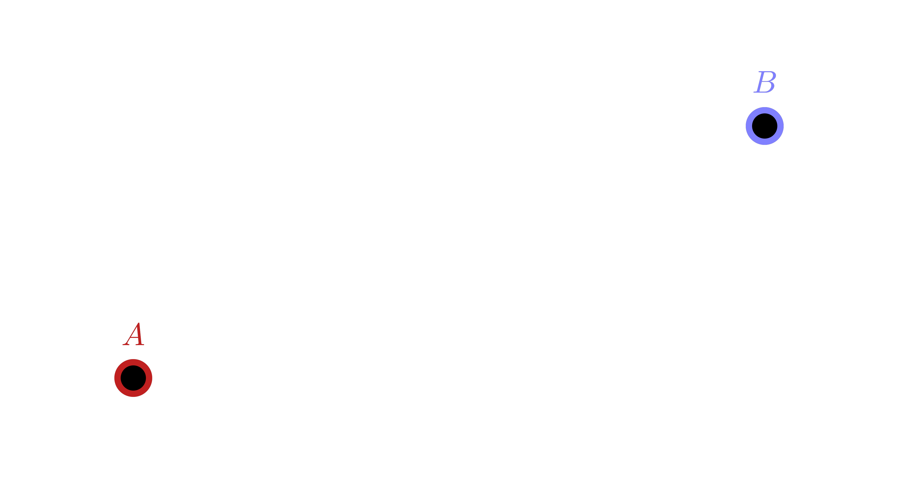

Aiden Gu
equation $\rightarrow$ graph
equation $\leftarrow$ graph
A spline is a function that generates a curve using control points
How can we connect $A$ to $B$?
Direction vector:$\quad\mathbf v=B-A$
Vector equation of a line:$\quad\mathbf r(t)=A+t\mathbf v$
Substitute:$\quad\mathbf r(t)=A+t(B-A)$
Rearrange:$\quad\mathbf r(t)=(1-t)A+tB$
$\operatorname{lerp}:\enspace\mathbf r(t)=(1-t)$$A$ $+\;t$$B$
Weighted average
coefficients $\rightarrow$ weights
$\mathbf r(t)=$ $(1-t)$ $A+$ $t$ $B$
$t_0=u\quad;\quad u\in[0,1]$
$t_1=u-1\quad;\quad u\in[1,2]$
$t_2=u-2\quad;\quad u\in[2,3]$
$\vdots$
$t_i=u-i\quad;\quad u\in[i,i+1]$
$\mathbf r_0(t_0)\quad;\quad u\in[0,1]$
$\mathbf r_1(t_1)\quad;\quad u\in[1,2]$
$C^0:\;$ position
$C^1:\;$ velocity
$C^2:\;$ acceleration
$C^3:\;$ jerk
$G^0:\;$ position
$G^1:\;$ tangent
$G^2:\;$ curvature
$G^3:\;$ torsion
Except if $\;\mathbf r'(t)=\mathbf 0\;$:
Looking back:
Each knot interval: $\;C^{\infty}$ ✅
All together: $\;C^0$ ✅
All together: $\;C^1$ ❌
All together: $\;G^1$ ❌
$\small \mathbf r(t)= \begin{bmatrix} 1&t&t^2&t^3 \end{bmatrix} \begin{bmatrix} \color{#C02020}{c_0}&\color{#70FF70}{c_1}&\color{#8080FF}{c_2}&\color{#F0C000}{c_3}\\ \color{#C02020}{c_4}&\color{#70FF70}{c_5}&\color{#8080FF}{c_6}&\color{#F0C000}{c_7}\\ \color{#C02020}{c_8}&\color{#70FF70}{c_9}&\color{#8080FF}{c_{10}}&\color{#F0C000}{c_{11}}\\ \color{#C02020}{c_{12}}&\color{#70FF70}{c_{13}}&\color{#8080FF}{c_{14}}&\color{#F0C000}{c_{15}} \end{bmatrix} \begin{bmatrix} \color{#C02020}{P_0}\\\color{#70FF70}{P_1}\\\color{#8080FF}{P_2}\\\color{#F0C000}{P_3} \end{bmatrix} $
$\small\mathbf r'(t)= \begin{bmatrix} 0&1&2t&3t^2 \end{bmatrix} \cdot M\cdot P $
$\small M= \begin{bmatrix} c_0&c_1&c_2&c_3\\ c_4&c_5&c_6&c_7\\ c_8&c_9&c_{10}&c_{11}\\ c_{12}&c_{13}&c_{14}&c_{15} \end{bmatrix} $
$\mathbf{r}(t)=P_0$$\left(c_0 + c_4 t + c_8 t^2 + c_{12} t^3\right)$
$P_1$$\left(c_1 + c_5 t + c_9 t^2 + c_{13} t^3\right)$
$P_2$$\left(c_2 + c_6 t + c_{10} t^2 + c_{14} t^3\right)$
$P_3$$\left(c_3 + c_7 t + c_{11} t^2 + c_{15} t^3\right)$
$\mathbf r(0)=$ $P_0$
$\mathbf r'(0)=$ $v_0$
$\mathbf r(1)=$ $P_1$
$\mathbf r'(1)=$ $v_1$
$\small \mathbf r(t)= \begin{bmatrix} 1&t&t^2&t^3 \end{bmatrix} \begin{bmatrix} c_0&c_1&c_2&c_3\\ c_4&c_5&c_6&c_7\\ c_8&c_9&c_{10}&c_{11}\\ c_{12}&c_{13}&c_{14}&c_{15} \end{bmatrix} \begin{bmatrix} P_0\\P_1\\P_2\\P_3 \end{bmatrix} $
$\mathbf r(t)= \begin{bmatrix} 1&t&t^2&t^3 \end{bmatrix} \begin{bmatrix} \mathbf a\\\mathbf b\\\mathbf c\\\mathbf d \end{bmatrix} $
$\mathbf r(t)= \mathbf a+\mathbf bt+\mathbf ct^2+\mathbf dt^3 $
$\mathbf r(t)= \mathbf a+\mathbf bt+\mathbf ct^2+\mathbf dt^3 $
$\mathbf r(0):\;\quad \mathbf a = P_0$
$\mathbf r'(0):\quad \mathbf b = v_0$
$\mathbf r(1):\;\quad \mathbf a+\mathbf b+\mathbf c+\mathbf d = P_1$
$\mathbf r'(1):\quad \mathbf b+2\mathbf c+3\mathbf d = v_1$
$\small M\cdot \begin{bmatrix} P_0\\v_0\\P_1\\v_0 \end{bmatrix} = \begin{bmatrix} \mathbf a\\\mathbf b\\\mathbf c\\\mathbf d \end{bmatrix} = \begin{bmatrix} P_0\\v_0\\-3P_0-2v_0+3P_1-v_1\\2P_0+v_0-2P_1+v_1 \end{bmatrix} $
$\footnotesize \mathbf r(t)= \begin{bmatrix} 1&t&t^2&t^3 \end{bmatrix} \begin{bmatrix} 1&0&0&0\\ 0&1&0&0\\ -3&-2&3&-1\\ 2&1&-2&1 \end{bmatrix} \begin{bmatrix} P_0\\v_0\\P_1\\v_1 \end{bmatrix} $
$P_0$$\quad$ $v_0$$\quad$ $P_1$$\quad$ $v_1$
$\small\mathbf r''(t)= \begin{bmatrix} 0&0&2&6t \end{bmatrix} \cdot M\cdot P $
$\small \kappa=\frac{\;\mathbf r'(t)\;\wedge\;\mathbf r''(t)\;}{\|\mathbf r'(t)\|^3}$
$C^0\;$ ✅
$C^1\;$ ✅
$C^2\;$ ❌
$G^2\;$ ❌
$\small\mathbf a = (1-t)P_0+tP_1$
$\small\mathbf b = (1-t)P_1+tP_2$
$\small\mathbf c = (1-t)P_2+tP_3$
$\small\mathbf d = (1-t)\mathbf a+t\mathbf b$
$\small\mathbf e = (1-t)\mathbf b+t\mathbf c$
$\small\mathbf r(t) = (1-t)\mathbf d+t\mathbf e$
$\footnotesize \mathbf r(t)= \begin{bmatrix} 1&t&t^2&t^3 \end{bmatrix} \begin{bmatrix} 1&0&0&0\\ -3&3&0&0\\ 3&-6&3&0\\ -1&3&-3&1 \end{bmatrix} \begin{bmatrix} P_0\\P_1\\P_2\\P_3 \end{bmatrix} $
$P_0$$\quad$ $P_1$$\quad$ $P_2$$\quad$ $P_3$
$C^0\;$ ✅
$C^1\;$ ✅
$C^2\;$ ❌
$G^2\;$ ❌
$C^0\;$ ✅
$C^1\;$ ✅
$C^2\;$ ✅
knot interval $\rightarrow$ knot joint
$\footnotesize B_0(0)$ $=\footnotesize 0$
$\footnotesize B_0'(0)$ $=\footnotesize 0$
$\footnotesize B_0''(0)$ $=\footnotesize 0$
$\footnotesize B_1(0)$ $=\footnotesize$ $\footnotesize B_0(1)$
$\footnotesize B_1'(0)$ $=\footnotesize$ $\footnotesize B_0'(1)$
$\footnotesize B_1''(0)$ $=\footnotesize$ $\footnotesize B_0''(1)$
$\footnotesize B_2(0)$ $=\footnotesize$ $\footnotesize B_1(1)$
$\footnotesize B_2'(0)$ $=\footnotesize$ $\footnotesize B_1'(1)$
$\footnotesize B_2''(0)$ $=\footnotesize$ $\footnotesize B_1''(1)$
$\footnotesize B_3(0)$ $=\footnotesize$ $\footnotesize B_2(1)$
$\footnotesize B_3'(0)$ $=\footnotesize$ $\footnotesize B_2'(1)$
$\footnotesize B_3''(0)$ $=\footnotesize$ $\footnotesize B_2''(1)$
$\footnotesize B_3(1)$ $=\footnotesize 0$
$\footnotesize B_3'(1)$ $=\footnotesize 0$
$\footnotesize B_3''(1)$ $=\footnotesize 0$
$\footnotesize \color{#C02020}{B_0(t)} \color{#FFFFFF}{+} \color{#70FF70}{B_1(t)} \color{#FFFFFF}{+} \color{#8080FF}{B_2(t)} \color{#FFFFFF}{+} \color{#F0C000}{B_3(t)} \color{#FFFFFF}{=1}$
$\scriptsize M= \begin{bmatrix} \color{#C02020}{c_0}&\color{#70FF70}{c_1}&\color{#8080FF}{c_2}&\color{#F0C000}{c_3}\\ \color{#C02020}{c_4}&\color{#70FF70}{c_5}&\color{#8080FF}{c_6}&\color{#F0C000}{c_7}\\ \color{#C02020}{c_8}&\color{#70FF70}{c_9}&\color{#8080FF}{c_{10}}&\color{#F0C000}{c_{11}}\\ \color{#C02020}{c_{12}}&\color{#70FF70}{c_{13}}&\color{#8080FF}{c_{14}}&\color{#F0C000}{c_{15}} \end{bmatrix} $
$\scriptsize = \large\frac{1}{6}\!\scriptsize \begin{bmatrix} \color{#C02020}{1}&\color{#70FF70}{4}&\color{#8080FF}{1}&\color{#F0C000}{0}\\ \color{#C02020}{-3}&\color{#70FF70}{0}&\color{#8080FF}{3}&\color{#F0C000}{0}\\ \color{#C02020}{3}&\color{#70FF70}{-6}&\color{#8080FF}{3}&\color{#F0C000}{0}\\ \color{#C02020}{-1}&\color{#70FF70}{3}&\color{#8080FF}{-3}&\color{#F0C000}{1} \end{bmatrix} $
$\footnotesize \mathbf r(t)= \begin{bmatrix} 1&t&t^2&t^3 \end{bmatrix} \large\frac{1}{6}\!\!\footnotesize \begin{bmatrix} 1&4&1&0\\ -3&0&3&0\\ 3&-6&3&0\\ -1&3&-3&1 \end{bmatrix} \begin{bmatrix} P_0\\P_1\\P_2\\P_3 \end{bmatrix} $
$P_0$$\quad$ $P_1$$\quad$ $P_2$$\quad$ $P_3$
$C^0\;$ ✅
$C^1\;$ ✅
$C^2\;$ ✅
$G^2\;$ ✅
Interpolation ❌
Hermite: physics simulations
Bézier: vector graphics
B-Spline: cameras & reflections
NURBS
Cardinal
Catmull-Rom
$s=\int\limits_{t_0}^{t_1}\|\mathbf r'(t)\|dt$
Elliptic integral ❌
$\small \mathbf r(u,v)= \begin{bmatrix}1&u&u^2&u^3\end{bmatrix} MPM^T \begin{bmatrix}1\\v\\v^2\\v^3\end{bmatrix} $
$\small A = \iint\limits_S \left\| \frac{\partial \mathbf r}{\partial u} \times \frac{\partial \mathbf r}{\partial v} \right\| du\,dv $
Slides: Reveal.js
Animations: Manim.py
Graphs: Plotly.js
Splines in Single and Multivariable Calculus by Yves Nievergelt
The Continuity of Splines by Freya Holmér
A Practical Guide to Splines by Carl de Boor
Curves and Surfaces for Computer-Aided Geometric Design: A Practical Guide by Gerald Farin